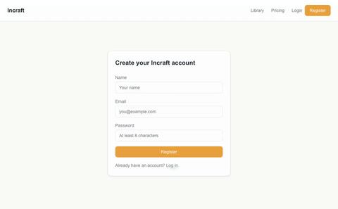
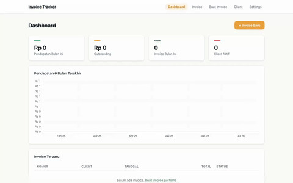
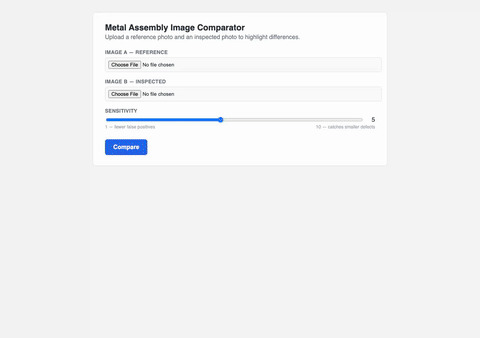

01 / Selected system
Retainer Billing Run
RailCall
Audited release snapshot v1.9.2 · 14 runtime nodes
Workflow repository (opens in a new tab)Dave
I work on the parts of software most people skip.
The pipeline that has to keep running when the API changes.
The billing logic that can't fire twice.
The integration that needs to survive a bad day.
Python · APIs · AI-enabled workflows
01 / Selected system
RailCall
Audited release snapshot v1.9.2 · 14 runtime nodes
Workflow repository (opens in a new tab)01 / Workflow state
History / Deduplication
Check what already happened before constructing the next action. Invoice history and deduplication shape the run before provider execution.
History · deduplication
02 / Workflow state
Approval / Execution guard
Approval stays bound to the exact plan that was reviewed. The execution guard checks plan identity before the workflow charges.
Station-controlled approval · plan identity/hash
03 / Workflow state
Reconciliation / Settlement
Provider results are reconciled as landed, failed, or unknown. Unresolved outcomes hold settlement instead of triggering a blind retry.
Landed · failed · unknown · settlement hold
02 / Provider surface
v1.6.2
A provider surface for invoicing, subscriptions, payments, and account state, with provider writes stopping at the approval boundary before execution.
34commands
Module / Command surface
21read
13approval-gated writes
4 read-only AI commands
Module / Governance
Provider writes pass through Station Approval Airlock. Stripe idempotency is tied to the approved payload hash.
Stripe Invoicing repository (opens in a new tab)03 / Other work



A B2B asset platform focused on product validation, authentication, and reporting.
An offline invoice workflow with PDF generation, local data storage, and reporting for small business operations.
A visual comparison tool for spotting pixel-level differences and checking generated assets.
About / Dave
These days I mostly work in Python, APIs and the awkward space between systems that weren't designed to cooperate.
APIs changing underneath a workflow.
A billing action firing twice.
A failed request where nobody knows whether the money moved.
06 / Contact
That's usually the interesting part.